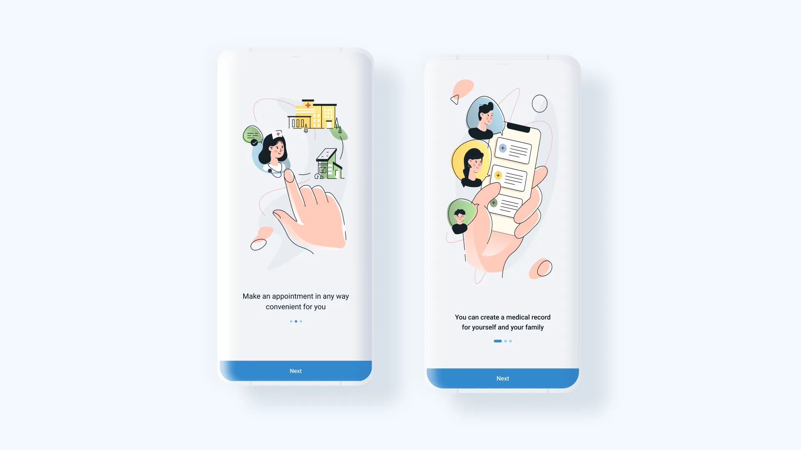

DobroDoc+
Redesign cut time-to-booking by 40% in usability tests.

Problem & Context
DobroDoc+ already existed — but the original app was outdated and frustrating to use. Booking a doctor's appointment required more effort than the illness itself.
The core pain: when you're sick, the last thing you want is to navigate a broken interface or travel to a clinic just to get in the queue. Busy adults needed a way to see a doctor without leaving home.
The goal was a full redesign — faster booking, clearer navigation, and an experience that works when you feel your worst.
Roadmap
- 1.0
UX Audit
Analysed existing app — broken flows, inconsistent patterns, key drop-off points.
Audit report - 2.0
User Research
Interviewed busy adults about medical apps and clinic visits.
Interview notes - 3.0
UX Strategy
Defined redesign priorities. Goal: booking under 3 taps, eliminate redundant screens.
Strategy doc - 4.0
Wireframes
Redesigned core flows — booking, doctor search, medical history.
Lo-fi wireframes - 5.0
Usability Study
Two rounds — lo-fi and hi-fi — with busy adults.
Usability report - 6.0
Mockups & Hi-fi
Full visual redesign with new component library.
Hi-fi prototype - 7.0
Hand-off
Specs, annotations, component documentation.
Figma handoff
Research
Stakeholder interviews
7 stakeholders: Medical Director, COO, Head of Product, Compliance Officer.
Surveys
250 patients and 35 healthcare providers. 84% wanted online consultations. 73% found traditional booking inconvenient.
User interviews
15 patients + 8 doctors, 60-min sessions.
User flows
One path, end to end: first run, the symptom, the med card, the doctor, the format the consultation takes, and what it leaves behind.
- StartOpens the app
- Step 1 · First run
- ScreenOnboardingBook the way that suits you
- ScreenOnboardingA medical record for you and your family
- ScreenOnboardingConclusion and prescription after the visit
- ActionSigns up
- Step 2 · What worries you
- ScreenHomeAsk a doctor, or open the med card
- ActionDescribes what worries them
- SystemMatches a specialityThe answers point at who to see
- Step 3 · The med card
- ScreenMedical cardsOne per family member
- ActionFills the card in, or picks whose it is
- Step 4 · Pick a doctor
- ScreenSpecialistConsultation type, what they treat, the price
- ActionPicks a slot and pays
- SystemNotificationsThe visit starts in five minutes
- Step 5 · The consultation
- DecisionWhich format?
-
Chat
- ScreenChatThe consultation itself, in writing
Video- ScreenVideo consultation
Voice- ScreenAudio call
- Step 6 · After the visit
- SystemConclusion written upThe diagnosis and what was prescribed
- ScreenMed cardThe visit, filed against the right family member
- ScreenVisit historyEvery past consultation, with its conclusion
- EndTreated, with a record of it
Mockups
Eleven screens from the shipped app — onboarding, the med card, picking a specialist, and the consultation itself in chat, video and voice.
Usability testing
Lo-fi prototype
- Findings
- Users wanted doctor availability before clicking profiles
- Symptom checker felt untrustworthy — no disclaimers
- Family profile switching was confusing
- Changes made
- Availability indicators added on doctor cards
- Symptom checker redesigned with disclaimer + emergency warnings
- Persistent family switcher added at top of screens
Hi-fi prototype
- Findings
- Users wanted connection status before video call
- 100% of users loved digital prescription feature
- Users wanted appointment reminders before consultations
- Changes made
- Connection quality indicator + test call added
- Push notifications with reminders + checklist
- Post-consultation summary auto-sent to email
Launched late 2020. Time-to-booking dropped 40% in usability tests.
Digital prescriptions and visit summaries drew the most praise. Live on both platforms today.
08 — ReflectionI’d start with a design system on day one — component drift cost cleanup before handoff.
Two rounds of testing found different things: lo-fi structural, hi-fi trust. Healthcare needs both.